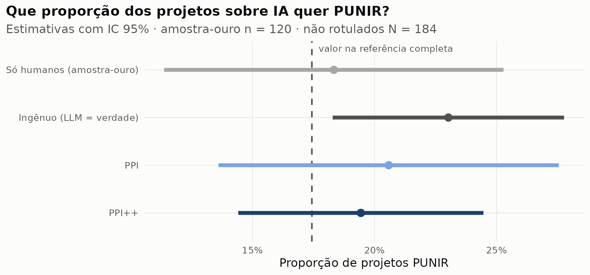
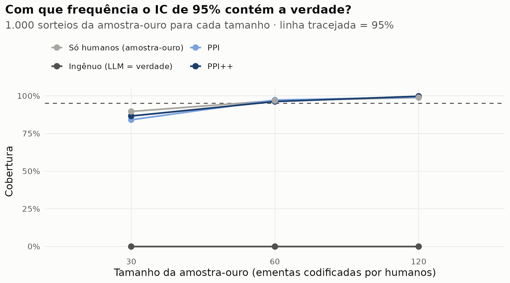
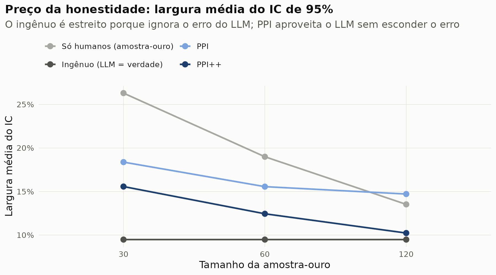
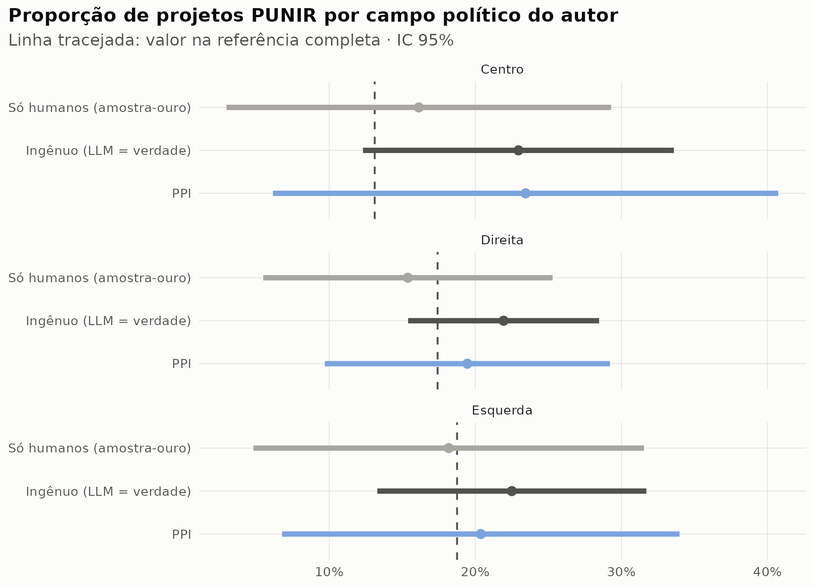

Capítulo 7 Inferência com rótulos imperfeitos
Chegamos à pergunta substantiva: que proporção dos projetos sobre IA quer PUNIR? Chamemos essa proporção de \(\theta\). Temos dois tipos de informação:
- a amostra-ouro, com \(n = 120\) ementas codificadas por humanos (\(Y_j\)) e pelo LLM (\(f(X_j)\));
- as demais \(N = 184\) ementas, codificadas só pelo LLM (\(f(X_i)\)).
7.1 Duas soluções ruins
Só humanos. Usar apenas a amostra-ouro:
\[\hat\theta_H = \frac{1}{n}\sum_{j=1}^{n} Y_j.\]
É sem viés (a amostra é aleatória), mas imprecisa: desperdiça a informação das outras 184 ementas.
Ingênuo. Tratar o LLM como verdade no corpus inteiro:
\[\hat\theta_{LLM} = \frac{1}{N+n}\sum_{i=1}^{N+n} f(X_i).\]
É preciso (usa todas as ementas), mas enviesado pelo erro do LLM. E o pior: seu intervalo de confiança é estreito, o que transmite uma segurança que ele não tem.
7.2 Prediction-Powered Inference
A ideia de Angelopoulos, Bates, et al. (2023) é usar a amostra-ouro para medir o viés do LLM e subtraí-lo da estimativa feita com o LLM:
\[ \hat\theta_{PP} = \underbrace{\frac{1}{N}\sum_{i=1}^{N} f(X_i)}_{\text{LLM nos não rotulados}} \; - \; \underbrace{\frac{1}{n}\sum_{j=1}^{n}\big(f(X_j) - Y_j\big)}_{\text{viés do LLM medido na amostra-ouro}}, \]
com variância estimada por
\[ \widehat{\text{Var}}(\hat\theta_{PP}) = \frac{\hat\sigma^2_{f}}{N} + \frac{\hat\sigma^2_{f-Y}}{n}. \]
O segundo termo, chamado de retificador, é o que torna o estimador honesto. A propriedade central é que o PPI não faz nenhuma hipótese sobre a qualidade do LLM: um LLM ruim gera um retificador com variância alta e, portanto, um IC largo, nunca um IC errado. Em R, são cinco linhas:
7.3 PPI++
O PPI++ (Angelopoulos, Duchi, et al. 2023) pondera o LLM por um peso \(\lambda \in [0, 1]\) escolhido a partir dos dados para minimizar a variância:
\[ \hat\theta_{PP}^{\lambda} = \bar Y_n + \lambda\big(\bar f_N - \bar f_n\big), \qquad \hat\lambda = \frac{\widehat{\text{Cov}}(Y, f)}{(1 + n/N)\,\widehat{\text{Var}}(f)}. \]
Se o LLM for inútil, \(\hat\lambda \to 0\) e o estimador volta a ser o “só humanos”; se for muito bom, \(\hat\lambda \to 1\) e ele se aproxima do PPI.
est_ppi_plus <- function(y_n, f_n, f_N) {
n <- length(y_n); N <- length(f_N)
f_todos <- c(f_n, f_N)
lambda <- cov(y_n, f_n) / ((1 + n / N) * var(f_todos))
lambda <- min(max(lambda, 0), 1)
est <- mean(y_n) + lambda * (mean(f_N) - mean(f_n))
ep <- sqrt(var(y_n - lambda * f_n) / n + lambda^2 * var(f_N) / N)
ic_normal(est, ep) |> mutate(lambda = lambda)
}Abordagens relacionadas, como o Design-based Supervised Learning de Egami et al. (2023), seguem a mesma lógica: usar a amostra rotulada por humanos para corrigir o erro do rótulo automático na regressão de interesse.
7.4 Que proporção dos projetos quer PUNIR?

Figura 7.1: Estimativas da proporção de projetos PUNIR com IC 95%. A linha vertical marca o valor na referência completa.
| Estimador | Estimativa | IC 95% | Largura | λ |
|---|---|---|---|---|
| Só humanos (amostra-ouro) | 18,3% | [11,4%; 25,3%] | 13,9% | |
| Ingênuo (LLM = verdade) | 23,0% | [18,3%; 27,8%] | 9,5% | |
| PPI | 20,6% | [13,6%; 27,6%] | 13,9% | |
| PPI++ | 19,4% | [14,4%; 24,5%] | 10,0% | 0,49 |
Como este é um corpus didático com referência para todas as 304 ementas, conhecemos o “valor verdadeiro” (17,4%) e podemos conferir quem acerta. O estimador ingênuo superestima a proporção punitiva (23,0%) e seu IC não contém o valor verdadeiro. Os demais contêm.
7.5 Simulação: com que frequência o IC acerta?
Um único resultado pode ser sorte. Para avaliar os estimadores, repetimos o sorteio da amostra-ouro 1.000 vezes para cada tamanho (\(n\) = 30, 60 e 120) e verificamos com que frequência o IC de 95% contém o valor verdadeiro. Um bom IC de 95% deve acertar em cerca de 95% das vezes.

Figura 7.2: Cobertura dos ICs de 95% em 1.000 sorteios da amostra-ouro.

Figura 7.3: Largura média dos ICs de 95%: o preço da honestidade.
| Estimador | n (ouro) | Cobertura | Largura média | Viés (p.p.) |
|---|---|---|---|---|
| Ingênuo (LLM = verdade) | 30 | 0,0% | 9,5% | 5,6 |
| PPI | 30 | 84,1% | 18,4% | 0,3 |
| PPI++ | 30 | 86,6% | 15,6% | -1,3 |
| Só humanos (amostra-ouro) | 30 | 89,6% | 26,3% | -0,6 |
| Ingênuo (LLM = verdade) | 60 | 0,0% | 9,5% | 5,6 |
| PPI | 60 | 97,2% | 15,6% | 0,2 |
| PPI++ | 60 | 96,2% | 12,4% | -0,5 |
| Só humanos (amostra-ouro) | 60 | 96,8% | 19,0% | -0,3 |
| Ingênuo (LLM = verdade) | 120 | 0,0% | 9,5% | 5,6 |
| PPI | 120 | 99,1% | 14,7% | 0,1 |
| PPI++ | 120 | 99,7% | 10,2% | -0,2 |
| Só humanos (amostra-ouro) | 120 | 98,8% | 13,5% | -0,2 |
O resultado é eloquente: o IC ingênuo cobriu o valor verdadeiro em 0% das simulações, para qualquer tamanho de amostra-ouro. Ele é o mais estreito justamente porque ignora o erro do LLM. O PPI++ chega a 99,7% de cobertura com \(n = 120\), com um IC 24% mais estreito, em média, que o “só humanos”. Com \(n = 30\), todos os estimadores honestos ficam abaixo de 95%: amostras-ouro muito pequenas comprometem a aproximação normal.
7.6 E entre campos políticos?

Figura 7.4: Proporção de projetos PUNIR por campo político do autor, segundo três estimadores.
Por campo, a amostra-ouro tem entre 31 e 52 ementas, e os intervalos ficam largos. Os estimadores discordam entre si quanto à ordem dos campos, e todos os intervalos se sobrepõem amplamente. Não há evidência, com estes dados, de que um campo político legisle de forma mais punitiva que outro. Relatar o tamanho da amostra-ouro em cada grupo é obrigatório.
7.7 O que os números dizem
- O prompt importa mais que o acaso: trocar a semente muda 0% dos rótulos; trocar o prompt muda 23%.
- O ingênuo engana: superestima a proporção punitiva e seu IC nunca cobriu a verdade na simulação.
- O PPI++ corrige o viés e entrega um IC mais estreito que o “só humanos”, aproveitando o LLM sem esconder seu erro.
- Resposta substantiva (ilustrativa, enquanto a referência for preliminar): pelo PPI++, cerca de 19% dos projetos sobre IA no Congresso querem punir (IC 95% de 14% a 24%), algo entre 1 em cada 7 e 1 em cada 4; na referência, cerca de metade regula (49%).
7.8 Mão na massa: os quatro estimadores, passo a passo
Como executar
- Em R:
Rscript R/06_inferencia.R(menos de 1 minuto). Lê o melhor prompt emresultados/tabelas/validade_instrumentos.csv(por isso depende deR/05_validacao.R), grava as tabelasestimativas_punir*.csvesimulacao_cobertura.csve as figuras 00 e 05 a 08. - Em Python: notebook
python/05_inferencia.ipynb(grava emresultados/python/). - Os blocos abaixo refazem as contas sem gravar nada.
7.8.1 Montar \(Y\) e \(f\)
Tudo começa com uma tabela de uma linha por ementa, com o rótulo do LLM transformado em 0/1 (\(f\) = “o LLM disse PUNIR?”) e, só na amostra-ouro, o rótulo humano em 0/1 (\(Y\)).
source("R/funcoes_medicao.R")
corpus <- carrega_corpus()
ouro <- carrega_ouro()
ref <- read_csv("dados/anotacoes/referencia_completa.csv", show_col_types = FALSE)
llm <- carrega_llm()
dados <- corpus |>
select(doc_id, campo) |>
left_join(llm |> filter(prompt_id == "v2", temperatura == 0, semente == 42) |>
select(doc_id, categoria_llm), by = "doc_id") |>
left_join(select(ref, doc_id, categoria_ref = categoria), by = "doc_id") |>
mutate(na_ouro = doc_id %in% ouro$doc_id,
f = as.integer(categoria_llm %in% "PUNIR"),
y = if_else(na_ouro, as.integer(categoria_ref == "PUNIR"), NA_integer_))
head(dados, 4)# A tibble: 4 × 7
doc_id campo categoria_llm categoria_ref na_ouro f y
<chr> <chr> <fct> <chr> <lgl> <int> <int>
1 doc0001 Direita REGULAR REGULAR TRUE 0 0
2 doc0002 Direita REGULAR PROMOVER FALSE 0 NA
3 doc0003 Direita REGULAR REGULAR TRUE 0 0
4 doc0004 Centro REGULAR REGULAR TRUE 0 0lab <- filter(dados, na_ouro) # n: amostra-ouro (tem Y e f)
unl <- filter(dados, !na_ouro) # N: só f
c(n = nrow(lab), N = nrow(unl)) n N
120 184 from medicao import (est_humano, est_ingenuo, est_ppi, est_ppi_plus, compara_estimadores)
ref = pd.read_csv("dados/anotacoes/referencia_completa.csv")
v2 = llm[(llm["prompt_id"] == "v2") & (llm["temperatura"] == 0) & (llm["semente"] == 42)]
dados = (corpus[["doc_id", "campo"]]
.merge(v2[["doc_id", "categoria_llm"]], on="doc_id", how="left")
.merge(ref[["doc_id", "categoria"]]
.rename(columns={"categoria": "categoria_ref"}), on="doc_id", how="left"))
dados["na_ouro"] = dados["doc_id"].isin(ouro["doc_id"])
dados["f"] = (dados["categoria_llm"] == "PUNIR").astype(int)
punir_ref = (dados["categoria_ref"] == "PUNIR").astype(int)
dados["y"] = np.where(dados["na_ouro"], punir_ref, np.nan)
print(dados.head(4)) doc_id campo categoria_llm categoria_ref na_ouro f y
0 doc0001 Direita REGULAR REGULAR True 0 0.0
1 doc0002 Direita REGULAR PROMOVER False 0 NaN
2 doc0003 Direita REGULAR REGULAR True 0 0.0
3 doc0004 Centro REGULAR REGULAR True 0 0.0{'n': 120, 'N': 184}O que está sendo executado. Usamos o prompt v2 com temperatura 0, o melhor instrumento do capítulo anterior (o script escolhe automaticamente pela tabela de validade). Uma falha de formato do LLM contaria como “não PUNIR” (%in% devolve FALSE para NA); neste material não há falhas. Fora da amostra-ouro, y fica vazio de propósito: num estudo real, não conhecemos o rótulo humano dessas ementas. A coluna categoria_ref só existe aqui porque este é um corpus didático com referência completa.
7.8.2 Cada estimador, à mão
[1] 0.1833333[1] 0.2302632# (c) PPI: LLM nos não rotulados, menos o viés medido na amostra-ouro
vies_llm <- mean(f_n - y_n) # o retificador
c(media_llm_N = mean(f_N), vies = vies_llm, ppi = mean(f_N) - vies_llm)media_llm_N vies ppi
0.23913043 0.03333333 0.20579710 # (d) PPI++: o peso lambda que minimiza a variância
lambda <- cov(y_n, f_n) / ((1 + length(y_n) / length(f_N)) * var(c(f_n, f_N)))
c(lambda = lambda, ppi_plus = mean(y_n) + lambda * (mean(f_N) - mean(f_n))) lambda ppi_plus
0.4929114 0.1944060 y_n, f_n, f_N = lab["y"].to_numpy(), lab["f"].to_numpy(), unl["f"].to_numpy()
print("(a) só humanos:", round(y_n.mean(), 4))(a) só humanos: 0.1833(b) ingênuo: 0.2303vies_llm = (f_n - y_n).mean() # o retificador
print("(c) PPI: ", round(f_N.mean(), 4), "-", round(vies_llm, 4), "=",
round(f_N.mean() - vies_llm, 4))(c) PPI: 0.2391 - 0.0333 = 0.2058lam = np.cov(y_n, f_n, ddof=1)[0, 1] / ((1 + len(y_n) / len(f_N)) *
np.concatenate([f_n, f_N]).var(ddof=1))
print("(d) PPI++: lambda =", round(lam, 4), " estimativa =",
round(y_n.mean() + lam * (f_N.mean() - f_n.mean()), 4))(d) PPI++: lambda = 0.4929 estimativa = 0.1944O que está sendo executado. O “só humanos” é a proporção de PUNIR na amostra-ouro. O ingênuo é a proporção de PUNIR segundo o LLM em todas as ementas. O PPI parte da média do LLM nas ementas não rotuladas e subtrai o retificador: a média de \(f - Y\) na amostra-ouro, isto é, quanto o LLM superestima (se positivo) a proporção de PUNIR. O PPI++ começa do “só humanos” e soma a informação do LLM ponderada por \(\lambda\); aqui, \(\hat\lambda\) = 0,49: o LLM traz informação, mas o estimador ainda dá peso considerável à amostra-ouro. Com \(\lambda = 1\), a fórmula do PPI++ vira exatamente a do PPI; com \(\lambda = 0\), a do “só humanos”.
7.8.3 Com intervalos de confiança
As funções do material fazem as mesmas contas e acrescentam o erro-padrão e o IC 95% normal:
estimativas <- compara_estimadores(y_n, f_n, f_N)
theta <- mean(ref$categoria == "PUNIR") # valor na referência completa (didático)
estimativas |>
mutate(largura = ls - li, cobre = li <= theta & theta <= ls) |>
mutate(across(where(is.double), \(x) round(x, 4)))# A tibble: 4 × 8
estimador estimativa ep li ls lambda largura cobre
<chr> <dbl> <dbl> <dbl> <dbl> <dbl> <dbl> <lgl>
1 Só humanos (amostra-ouro) 0.183 0.0355 0.114 0.253 NA 0.139 TRUE
2 Ingênuo (LLM = verdade) 0.230 0.0242 0.183 0.278 NA 0.0948 FALSE
3 PPI 0.206 0.0356 0.136 0.276 NA 0.139 TRUE
4 PPI++ 0.194 0.0256 0.144 0.245 0.493 0.100 TRUE estimativas = compara_estimadores(y_n, f_n, f_N)
theta = (ref["categoria"] == "PUNIR").mean() # valor na referência completa (didático)
estimativas.assign(largura=lambda d: d["ls"] - d["li"],
cobre=lambda d: (d["li"] <= theta) & (theta <= d["ls"])).round(4) estimador estimativa ep li ls lambda largura cobre
0 Só humanos (amostra-ouro) 0.1833 0.0355 0.1138 0.2529 NaN 0.1390 True
1 Ingênuo (LLM = verdade) 0.2303 0.0242 0.1829 0.2777 NaN 0.0948 False
2 PPI 0.2058 0.0356 0.1361 0.2755 NaN 0.1394 True
3 PPI++ 0.1944 0.0256 0.1442 0.2446 0.4929 0.1004 True7.8.4 A simulação de cobertura
Este bloco repete o sorteio da amostra-ouro 1.000 vezes para cada tamanho (30, 60 e 120) e conta com que frequência cada IC contém o valor da referência. Leva alguns segundos.
simula <- function(n_ouro, B = 1000, semente = 1) {
set.seed(semente)
purrr::map(seq_len(B), \(b) {
idx <- sample(nrow(dados), n_ouro) # uma nova amostra-ouro
y_n <- as.integer(dados$categoria_ref[idx] == "PUNIR")
compara_estimadores(y_n, dados$f[idx], dados$f[-idx])
}) |>
purrr::list_rbind() |>
group_by(estimador) |>
summarise(cobertura = mean(li <= theta & theta <= ls),
largura_media = mean(ls - li), .groups = "drop") |>
mutate(n_ouro = n_ouro)
}
simulacao <- purrr::map(c(30, 60, 120), simula) |> purrr::list_rbind()
simulacao |>
mutate(across(where(is.double), \(x) round(x, 3))) |>
arrange(n_ouro) |>
print(n = 12)# A tibble: 12 × 4
estimador cobertura largura_media n_ouro
<chr> <dbl> <dbl> <dbl>
1 Ingênuo (LLM = verdade) 0 0.095 30
2 PPI 0.841 0.184 30
3 PPI++ 0.866 0.156 30
4 Só humanos (amostra-ouro) 0.896 0.263 30
5 Ingênuo (LLM = verdade) 0 0.095 60
6 PPI 0.972 0.156 60
7 PPI++ 0.962 0.124 60
8 Só humanos (amostra-ouro) 0.968 0.19 60
9 Ingênuo (LLM = verdade) 0 0.095 120
10 PPI 0.991 0.147 120
11 PPI++ 0.997 0.102 120
12 Só humanos (amostra-ouro) 0.988 0.135 120def simula(n_ouro, B=1000, semente=1):
rng = np.random.default_rng(semente)
ref_bin = (dados["categoria_ref"] == "PUNIR").astype(int).to_numpy()
f = dados["f"].to_numpy()
res = []
for _ in range(B):
idx = rng.choice(len(dados), n_ouro, replace=False) # uma nova amostra-ouro
resto = np.setdiff1d(np.arange(len(dados)), idx)
res.append(compara_estimadores(ref_bin[idx], f[idx], f[resto]))
r = pd.concat(res)
r["cobre"] = (r["li"] <= theta) & (theta <= r["ls"])
r["largura"] = r["ls"] - r["li"]
return (r.groupby("estimador", sort=False)
.agg(cobertura=("cobre", "mean"), largura_media=("largura", "mean"))
.assign(n_ouro=n_ouro))
simulacao = pd.concat([simula(n) for n in (30, 60, 120)])
simulacao.round(3) cobertura largura_media n_ouro
estimador
Só humanos (amostra-ouro) 0.897 0.267 30
Ingênuo (LLM = verdade) 0.000 0.095 30
PPI 0.846 0.188 30
PPI++ 0.869 0.160 30
Só humanos (amostra-ouro) 0.971 0.192 60
Ingênuo (LLM = verdade) 0.000 0.095 60
PPI 0.974 0.157 60
PPI++ 0.970 0.125 60
Só humanos (amostra-ouro) 0.989 0.136 120
Ingênuo (LLM = verdade) 0.000 0.095 120
PPI 0.988 0.147 120
PPI++ 1.000 0.103 120O que está sendo executado. Cada repetição sorteia uma nova amostra-ouro de tamanho \(n\), usa a referência como se fosse a codificação humana dessas ementas, aplica os quatro estimadores e verifica se cada IC contém o valor da referência completa. A cobertura é a proporção de repetições em que isso acontece; um IC de 95% honesto deveria ficar perto de 95%. O ingênuo não usa a amostra-ouro, por isso sua cobertura não melhora com \(n\): o viés do LLM não diminui com mais dados.
7.8.5 Por campo político
dados |>
filter(campo %in% c("Esquerda", "Centro", "Direita")) |>
group_by(campo) |>
group_modify(\(d, ...) {
l <- filter(d, na_ouro); u <- filter(d, !na_ouro)
compara_estimadores(l$y, l$f, u$f) |> mutate(n_ouro = nrow(l))
}) |>
ungroup() |>
filter(estimador %in% c("Só humanos (amostra-ouro)", "PPI++")) |>
select(campo, estimador, n_ouro, estimativa, li, ls) |>
mutate(across(where(is.double), \(x) round(x, 3)))# A tibble: 6 × 6
campo estimador n_ouro estimativa li ls
<chr> <chr> <int> <dbl> <dbl> <dbl>
1 Centro Só humanos (amostra-ouro) 31 0.161 0.03 0.293
2 Centro PPI++ 31 0.188 0.082 0.294
3 Direita Só humanos (amostra-ouro) 52 0.154 0.055 0.253
4 Direita PPI++ 52 0.174 0.103 0.245
5 Esquerda Só humanos (amostra-ouro) 33 0.182 0.048 0.315
6 Esquerda PPI++ 33 0.193 0.096 0.29 linhas = []
tres = dados[dados["campo"].isin(["Esquerda", "Centro", "Direita"])]
for campo, d in tres.groupby("campo"):
l, u = d[d["na_ouro"]], d[~d["na_ouro"]]
est = compara_estimadores(l["y"], l["f"], u["f"])
linhas.append(est.assign(campo=campo, n_ouro=len(l)))
(pd.concat(linhas)
.query("estimador in ['Só humanos (amostra-ouro)', 'PPI++']")
[["campo", "estimador", "n_ouro", "estimativa", "li", "ls"]].round(3)) campo estimador n_ouro estimativa li ls
0 Centro Só humanos (amostra-ouro) 31 0.161 0.030 0.293
3 Centro PPI++ 31 0.188 0.082 0.294
0 Direita Só humanos (amostra-ouro) 52 0.154 0.055 0.253
3 Direita PPI++ 52 0.174 0.103 0.245
0 Esquerda Só humanos (amostra-ouro) 33 0.182 0.048 0.315
3 Esquerda PPI++ 33 0.193 0.096 0.290O que está sendo executado. É o mesmo cálculo, repetido dentro de cada campo: a amostra-ouro de cada campo corrige o LLM naquele campo. É isso que protege a comparação entre campos do viés diferencial visto no capítulo anterior, ao preço de intervalos bem mais largos, porque cada campo tem só algumas dezenas de ementas na amostra-ouro.